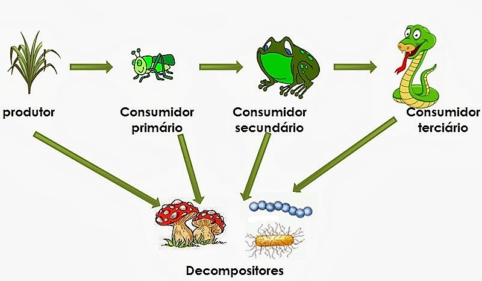
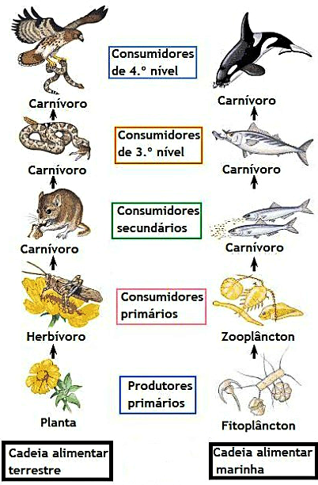

Cadeia alimentar ou cadeia trófica é a sequência linear de organismos, em que um serve de alimento para o outro. Cada elo da cadeia alimentar constitui um nível trófico, que é a posição do organismo na cadeia.
O primeiro é formado pelos produtores, organismos autótrofos, pois são quem produz a matéria orgânica que alimentará os demais componentes, utilizando para isso energia luminosa (fotossintetizantes) ou energia química (quimiossintetizantes). Tirando os produtores, consumidores e decompositores são todos heterótrofos.
Os seres que se alimentam diretamente dos produtores são herbívoros, e constituem o segundo nível trófico como consumidores primários; os seres que se alimentam dos herbívoros são os consumidores secundários, formando o terceiro nível trófico e assim por diante. Com exceção dos consumidores primários, os demais consumidores são carnívoros ou onívoros.
Ao morrer, produtores e consumidores de todos os níveis tróficos servem de alimento a certos fungos e bactérias, denominados decompositores. Estes decompõem a matéria orgânica, utilizando como alimento e liberando para o meio ambiente minerais e outras substâncias que podem ser utilizadas novamente pelos produtores.
Nos ecossistemas, as relações alimentares entre os organismos de uma comunidade são muito complexas, com um mesmo organismo participando de diversas cadeias alimentares, até mesmo em níveis tróficos diferentes.
É o caso da espécie humana que é onívora, e pode aparecer como consumidor primário em um caso, e de consumidor secundário ou terciário em um segundo caso. Essas relações alimentares entre os diversos organismos costumam ser representadas por teias alimentares.
Em ecossistemas aquáticos os produtores são seres microscópicos, que constituem o fitoplâncton. Os consumidores primários são principalmente protozoários, pequenos crustáceos, vermes, moluscos e larvas de diversas espécies, constituindo o zooplâncton, e certas espécies de peixe. Os consumidores secundários e terciários são principalmente os peixes.